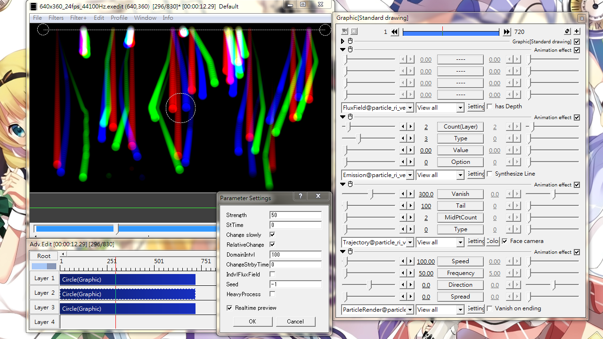
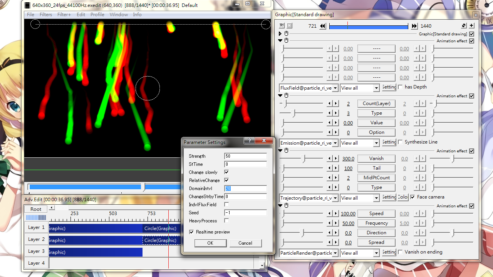

Fig14A: Effect of applying FluxField and enabling HeavyProcess. Red (Layer1): Particles going down in a straight line in the absence of FluxField. Green (Layer2): FluxField enabled with settings shown in the dialog at center. The tails became curry. Blue (Layer 3): Almost the same with Green particles except that HeavyProcess is enabled. Notice the tails' bending is more smooth but bend less. All seed values for FluxFiled and ParticleRender are set to -1. Colors other than pure red, green and blue are due to overlapping particles.

Fig14B: Effect of changing DomainIntvl. Green (layer 1): Default setting at DomainIntvl=100. Red (layer 2): DomainIntvl=20. Notice the red tails bend more frequently than green. All seed values set to -1. Yellow color is a result of two overlapping particles.
FluxField
Generate an invisible force field with crest and trough. Adds spatial irregularity like Wind@ and Style@.
Check box
has Depth: Applies field to the z-axis direction. Default only applies to x-y plane.
Setting dialog
Strength
Maximum amplitude of field fluctuation. Actual amplitude is randomized within this range.
StTime
A delay time after which the force field starts to act on particles. In milliseconds.
Change slowly
When StTime is set, the force field is applied gradually from time zero to StTime. Otherwise, a full-strength force field is applied from the start.
RelativeChange
When checked, time zero starts from particle emission. Otherwise count from object start.
DomainIntvl
Distance for half-wavelength. Smaller value cause more frequent bending. See Fig14B for example.
ChangeStrbyTime
Changing the strength of the force field for every fixed interval. Value in milliseconds.Use 0 for constant field.
IntvlFluxField
When checked, every particle use its own field. When unchecked, all particles use the same common field.
Seed
Seed number for random number generator. Independent from Seed in ParticleRender.
HeavyProcess
Applies more accurate but heavier calculation. See Fig14A for example.